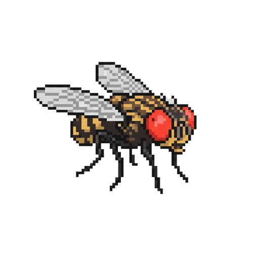
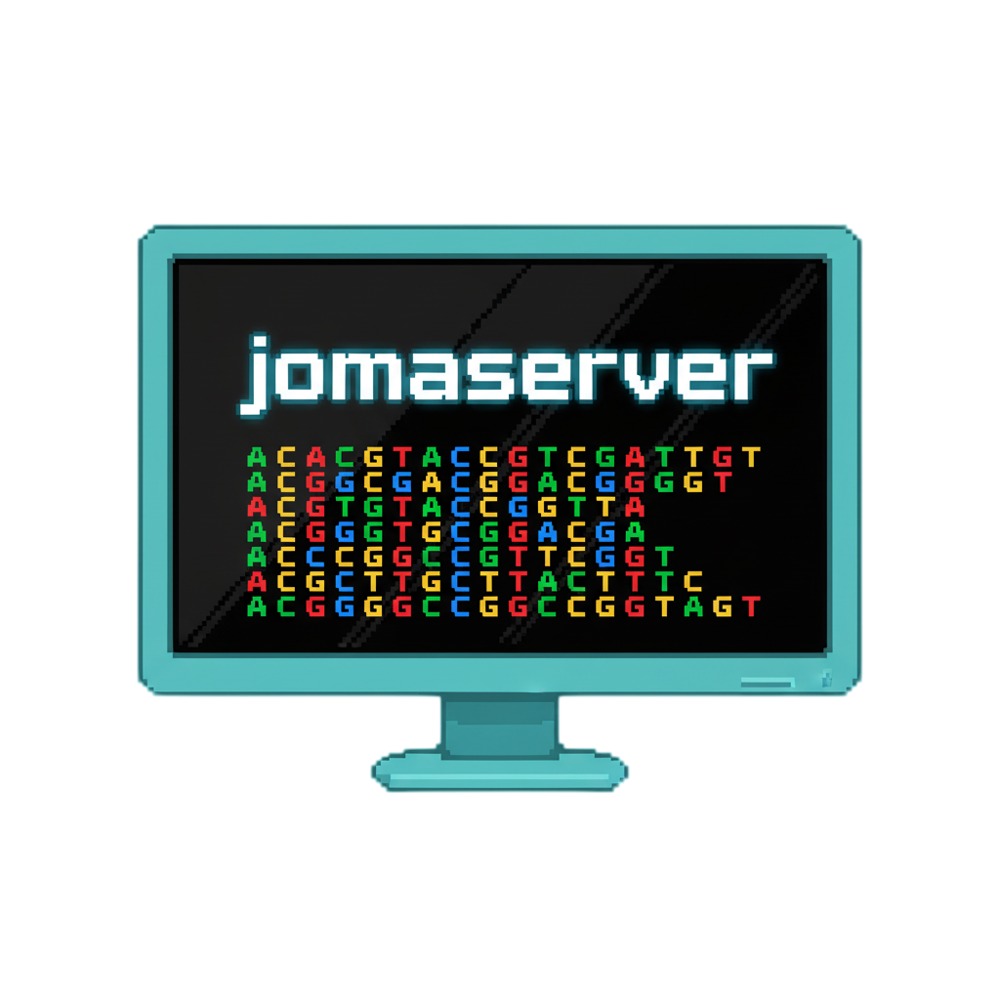

Oi, eu sou o Jomas!!!
Sou estudante de Biotecnologia na Universidade de Brasília, ao longo da minha tragetória, trabalhei com drosofílas como medidores de invasões biologicas, com um enfoque para Bioestatistica, analisando amplitude nicho e distribuição geografica por meio de dados populacionais coletados em reservas ecológicas.

Por me interessar por essa área e unindo os conhecimentos em biologia molecular que é o enfoque maior do meu curso, me interessei por Bioinformática e genômica, comecei um projeto na EMBRAPA, afim de montar o genoma rascunho de uma éspecie de campim.

Por isso criei esse blog, a ideia é que ele funcione tanto como um guia de estudos pessoal quanto como um lugar para compartilhar conhecimentos, desafios e aprendizados que vou adquirindo ao longo do caminho. Além de organizar meu próprio processo de aprendizado, também quero que este espaço sirva como referência e inspiração para quem se interessa pelos mesmos temas que eu.
